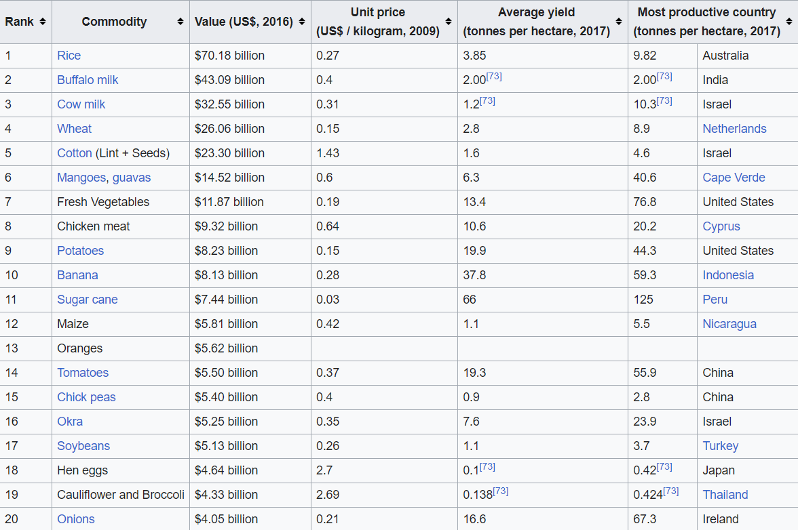
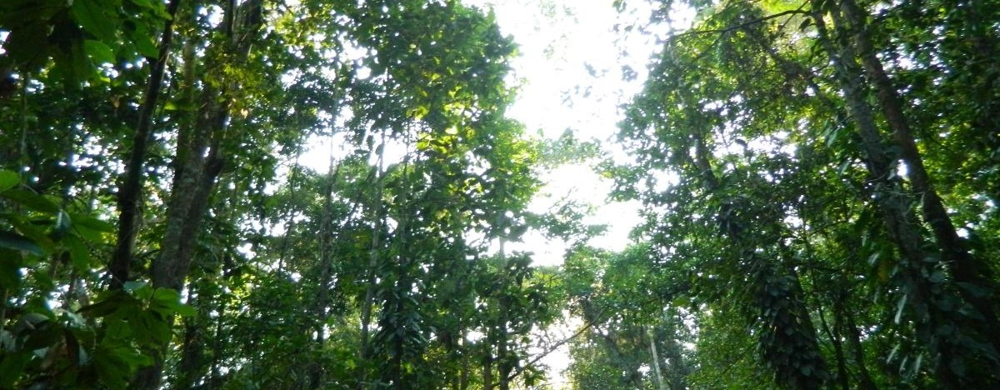

1) Agricultural Land
Agricultural land is land used for agriculture, which is the controlled use of other life forms to produce food for humans. It's also known as farmland, cropland, pasture, or rangeland.
Agricultural land Include:
- Total cultivable land
- Net sown area
- Fallow lands
- Culturable wasteland
There are two main uses of agricultural land:
- Arable farming: Land used for growing crops
- Pastureland: Land used for livestock rearing
Agriculture in India
The history of agriculture in India dates back to the Neolithic period. India ranks second worldwide in farm outputs. As per the Indian economic survey 2020 -21, agriculture employed more than 50% of the Indian workforce and contributed 20.2% to the country's GDP.
In 2016, agriculture and allied sectors like animal husbandry, forestry and fisheries accounted for 17.5% of the GDP (gross domestic product) with about 41.49% of the workforce in 2020.India ranks first in the world with highest net cropped area followed by US and China. The economic contribution of agriculture to India's GDP is steadily declining with the country's broad-based economic growth. Still, agriculture is demographically the broadest economic sector and plays a significant role in the overall socio-economic fabric of India.
The total agriculture commodities export was US$3.50 billion in March - June 2020. India exported $38 billion worth of agricultural products in 2013, making it the seventh-largest agricultural exporter worldwide and the sixth largest net exporter. Most of its agriculture exports serve developing and least developed nations. Indian agricultural/horticultural and processed foods are exported to more than 120 countries, primarily to the Japan, Southeast Asia, SAARC countries, the European Union and the United States.
Major product and yeilds

2) Forest Land
Forests are the dominant terrestrial ecosystem of Earth, and are distributed across the globe. Forests account for 75% of the gross primary productivity of the Earth's biosphere, and contains 80% of the Earth's plant biomass.
A forest constitutes many components that can be broadly divided into two categories that are biotic (living) and abiotic (non-living) components.
Forest are important because:
- Biodiversity:Forests are home to some of the most biodiversity-rich ecosystems on the planet.
- Products:Forests provide timber, bamboo, canes, leaves, grass, oil, resins, gums, shellac, tanning materials, dyes, hides, fur, fruits, nuts, roots, tubers and other useful things for human beings.
- Environmental services:Forests prevent floods and soil erosion, land degradation and improve the quality of air and water. Forests help in purifying air, water, and soil pollution.
- Hydrological cycle:Forests absorb rainfall, slow down runoff, and release water to recharge springs.
- Oxygen:Forests release oxygen during photosynthesis.
